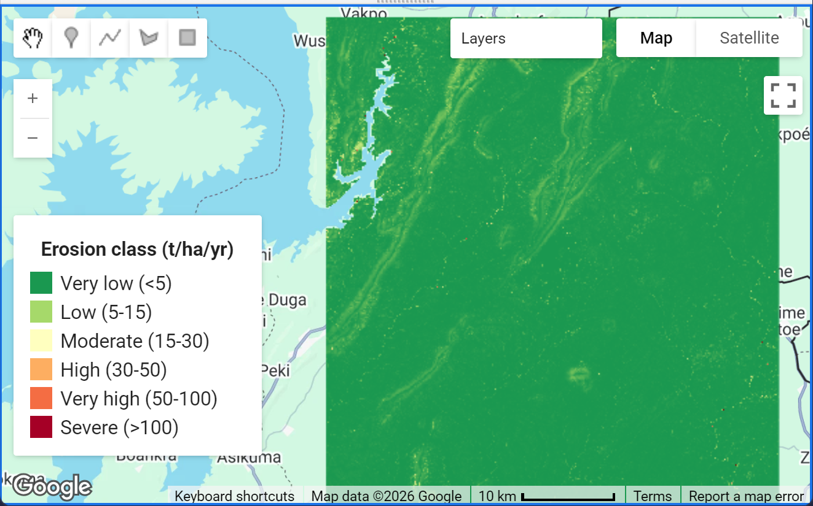

RUSLE Soil Loss and Erosion Risk Mapping
View JavaScript source Read the workflow

Project overview
This Google Earth Engine (GEE) workflow implements the Revised Universal Soil Loss Equation (RUSLE) to estimate potential average annual soil loss:
[ A = R \times K \times LS \times C \times P ]
where (A) is estimated soil loss (t ha⁻¹ yr⁻¹), (R) is rainfall erosivity, (K) is soil erodibility, (LS) represents slope length and steepness, (C) represents cover-management, and (P) represents support practices.
The script creates factor layers, an estimated soil-loss map, erosion-severity classes, summary statistics, and Google Drive export tasks.
Data and methods
| Component | Source or method | Role |
|---|---|---|
| Rainfall erosivity ((R)) | CHIRPS daily precipitation; Modified Fournier Index and Renard–Freimund relationship | Estimates rainfall erosivity |
| Soil erodibility ((K)) | OpenLandMap sand, clay, and organic-carbon layers; EPIC-style equation | Represents soil susceptibility to detachment |
| Slope factor ((LS)) | MERIT Hydro elevation and upstream area; Moore–Burch formulation | Represents terrain effects |
| Cover-management ((C)) | ESA WorldCover lookup table or Sentinel-2 NDVI option | Represents land-cover protection |
| Support practice ((P)) | (P=1) by default, with an optional slope-based cropland parameterization | Represents conservation-practice assumptions |
Main outputs
- Estimated annual soil loss raster (
A, t/ha/yr). - Six-category erosion-severity raster.
- Individual (R), (K), (LS), (C), and (P) factor layers.
- Mean, median, and maximum estimated soil loss.
- Estimated total soil loss and area by erosion class.
- Google Drive export tasks for the soil-loss map, classes, and factor stack.
Configuration
Edit the settings near the beginning of the script before running it in the Google Earth Engine Code Editor.
aoi: replace the example rectangle with your study-area boundary.RAIN_START_YEARandRAIN_END_YEAR: define the rainfall averaging period.C_METHOD: choose'landcover'or'ndvi'.USE_P_SLOPE: enable or disable the optional slope-based (P) factor.SCALE: set the analysis/export scale.EXPORT_CRS: choose an appropriate projected coordinate reference system for your study area.
Example map
The supplied screenshot is included in the site at docs/assets/images/rusle-erosion-map.png. It illustrates the map interface and erosion-class legend; it should be presented as an example output, not as independent validation of the model.
Important limitations and validation
RUSLE estimates sheet and rill erosion under the assumptions encoded in its factors. It does not directly model gully erosion, sediment routing, or sediment delivery to streams. The factors and their parameter values should be checked against local literature and field observations.
Before interpreting results, pay particular attention to:
- The rainfall-erosivity equation and its regional suitability.
- Soil-property units and the assumptions used to derive (K).
- The terrain data, flow accumulation interpretation, and LS-factor formulation.
- The land-cover-to-(C) lookup values and the season represented by Sentinel-2 composites.
- The (P)-factor values and whether they represent actual conservation practices.
- The analysis scale and output projection.
Do not treat the map as field-validated soil loss. Validate the parameterization and results for the intended location before using them for planning or policy.
JavaScript source
The complete script is available as a separate file and is shown below. Use the copy button on the code block to copy it into the Google Earth Engine Code Editor.
/*******************************************************************************
* RUSLE SOIL LOSS MODEL - GOOGLE EARTH ENGINE (Code Editor, JavaScript)
*
* A = R * K * LS * C * P (t ha-1 yr-1)
*
* R Rainfall erosivity CHIRPS daily rainfall -> Modified Fournier Index
* R = 0.0739 * MFI^1.847 (Renard & Freimund, 1994)
* K Soil erodibility OpenLandMap sand/clay/organic carbon
* EPIC equation (Williams, 1995), converted to SI
* LS Slope length-steepness MERIT Hydro (elevation + upstream area)
* Moore & Burch (1986) unit-stream-power formulation
* C Cover management Option 1: ESA WorldCover lookup table
* Option 2: Sentinel-2 NDVI (van der Knijff et al.)
* P Support practice 1 (none) or slope-based values for cropland
*
* REVISION NOTES (v2)
* - fCsand coefficient corrected (-0.0256, not -0.256)
* - R now averaged per year (Jensen's inequality bias removed)
* - A pinned to an explicit projected grid (was inheriting CHIRPS ~5.6 km)
* - Exports use an explicit EPSG code, not a server-side Projection object
* - K clamped to physical range; SCL mask tightened; slope smoothed
* - P table replaced with Wischmeier & Smith (1978) contour-farming values
*
* HOW TO USE: 1) Replace the AOI below. 2) Adjust the settings block.
* 3) Click Run.
******************************************************************************/
// ============================ 1. SETTINGS ====================================
// AOI: example rectangle (replace with your own boundary).
// To use your own asset: var aoi = ee.FeatureCollection('projects/ee-kwabenafosu/assets/Ghana').geometry();
var aoi = ee.Geometry.Rectangle([0.25, 6.35, 0.70, 6.85]);
var RAIN_START_YEAR = 2000; // rainfall averaging period (>= 10-20 years recommended)
var RAIN_END_YEAR = 2022;
var S2_YEAR = 2023; // year used for Sentinel-2 NDVI (C-factor option 2)
var C_METHOD = 'landcover'; // 'landcover' or 'ndvi'
var USE_P_SLOPE = false; // false: P = 1 everywhere; true: slope-based P on cropland
var LS_MAX = 40; // cap on LS to limit DEM/flow artefacts
var SCALE = 90; // analysis & export scale (m) - MERIT Hydro native ~90 m
// FIX: explicit export CRS. UTM 31N covers 0E-6E; change if you move the AOI.
var EXPORT_CRS = 'EPSG:32631';
Map.centerObject(aoi, 10);
// ============================ 2. R FACTOR ====================================
// Modified Fournier Index per year: MFI = sum(monthly P^2) / annual P
//
// NOTE: the Renard & Freimund (1994) relation is a PER-YEAR relationship.
// Because x^1.847 is convex, mean(MFI)^1.847 < mean(MFI^1.847), so we
// compute R for each year and then average.
//
// PERF: this performs (years x 12) monthly reductions. For long periods it is
// the slowest part of the script. Reduce RAIN_START_YEAR or coarsen the
// AOI if the computation times out.
var chirps = ee.ImageCollection('UCSB-CHG/CHIRPS/DAILY').select('precipitation');
var years = ee.List.sequence(RAIN_START_YEAR, RAIN_END_YEAR);
var months = ee.List.sequence(1, 12);
// Per-year R in MJ mm ha-1 h-1 yr-1
var rYearly = ee.ImageCollection.fromImages(
years.map(function (y) {
var monthly = ee.ImageCollection.fromImages(
months.map(function (m) {
var start = ee.Date.fromYMD(y, m, 1);
return chirps.filterDate(start, start.advance(1, 'month'))
.sum()
.rename('P')
.set('month', m);
})
);
var sumSq = monthly.map(function (img) { return img.pow(2); }).sum();
var total = monthly.sum();
var mfi = sumSq.divide(total.max(1)).rename('MFI');
return mfi.pow(1.847).multiply(0.0739).rename('R').set('year', y);
})
);
var R = rYearly.mean().rename('R'); // mean annual R over the period
// Mean annual rainfall (mm) - reference only
var annualP = ee.ImageCollection.fromImages(
years.map(function (y) {
var start = ee.Date.fromYMD(y, 1, 1);
return chirps.filterDate(start, start.advance(1, 'year')).sum()
.rename('P').set('year', y);
})
).mean();
// ============================ 3. K FACTOR ====================================
// FIX: Asset IDs corrected. The "-TOTAL-" variants do not exist in GEE.
// The correct OpenLandMap assets use "-WFRACTION-".
// OpenLandMap topsoil (mean of 0 cm and 10 cm layers), 250 m
// Sand fraction [%w] - values are 1-100 (already in %)
var sand = ee.Image('OpenLandMap/SOL/SOL_SAND-WFRACTION_USDA-3A1A1A_M/v02')
.select(['b0', 'b10']).reduce(ee.Reducer.mean()).rename('sand'); // %
// Clay fraction [%w] - values are 1-100 (already in %)
var clay = ee.Image('OpenLandMap/SOL/SOL_CLAY-WFRACTION_USDA-3A1A1A_M/v02')
.select(['b0', 'b10']).reduce(ee.Reducer.mean()).rename('clay'); // %
var silt = ee.Image(100).subtract(sand).subtract(clay).max(0).rename('silt');
// Organic carbon: dataset is stored as "x 5 g/kg" -> % = value * 5 / 10
// This asset ID is correct; no change needed here.
var oc = ee.Image('OpenLandMap/SOL/SOL_ORGANIC-CARBON_USDA-6A1C_M/v02')
.select(['b0', 'b10']).reduce(ee.Reducer.mean())
.multiply(0.5).max(0.01).rename('oc'); // % OC
// Williams (1995) EPIC equation
// f_csand = 0.2 + 0.3 * exp(-0.0256 * Sa * (1 - Si/100))
var fCsand = ee.Image(0.2).add(
sand.multiply(ee.Image(1).subtract(silt.divide(100)))
.multiply(-0.0256).exp().multiply(0.3)
);
// f_clsi = (Si / (Cl + Si))^0.3
var fClSi = silt.divide(clay.add(silt).max(0.01)).pow(0.3);
// f_orgc = 1 - 0.25*OC / (OC + exp(3.72 - 2.95*OC))
var fOrgC = ee.Image(1).subtract(
oc.multiply(0.25).divide(
oc.add(oc.multiply(-2.95).add(3.72).exp())
)
);
// f_hisand = 1 - 0.7*sn / (sn + exp(-5.51 + 22.9*sn)), sn = 1 - Sa/100
var sn = ee.Image(1).subtract(sand.divide(100));
var fHiSand = ee.Image(1).subtract(
sn.multiply(0.7).divide(
sn.add(sn.multiply(22.9).add(-5.51).exp())
)
);
// 0.1317 converts US units to SI: t ha h ha-1 MJ-1 mm-1
// Clamped to a physical range so EPIC outliers cannot propagate into A.
var K = fCsand.multiply(fClSi).multiply(fOrgC).multiply(fHiSand)
.multiply(0.1317).max(0).min(0.7).rename('K');
// ============================ 4. LS FACTOR ===================================
var merit = ee.Image('MERIT/Hydro/v1_0_1');
var elv = merit.select('elv');
var proj = elv.projection();
// FIX: smooth the DEM before computing slope. Raw 90 m MERIT slope is noisy
// and biases LS upward. Radius 1 pixel is a light 3x3 mean.
var elvSmooth = elv.focal_mean({radius: 1, units: 'pixels', iterations: 1});
// Fixed projection so slope does not change with map zoom level.
// FIX: pass the scale explicitly (was reproject(proj) with no scale).
var slopeDeg = ee.Terrain.slope(elvSmooth)
.reproject({crs: proj, scale: SCALE})
.rename('slope');
var slopeRad = slopeDeg.multiply(Math.PI / 180);
var sinSlope = slopeRad.sin().max(0.001);
// Specific catchment area (m2 per m of contour width); upa is in km2
var As = merit.select('upa').multiply(1e6).divide(SCALE).max(SCALE);
// Moore & Burch (1986): LS = (As/22.13)^0.4 * (sin(slope)/0.0896)^1.3
var LS = As.divide(22.13).pow(0.4)
.multiply(sinSlope.divide(0.0896).pow(1.3))
.min(LS_MAX).max(0).rename('LS');
// ============================ 5. C FACTOR ====================================
// NOTE: ESA WorldCover v200 is a 2021 static product.
var lc = ee.ImageCollection('ESA/WorldCover/v200').first().select('Map');
var C;
if (C_METHOD === 'landcover') {
// WorldCover classes: 10 tree, 20 shrub, 30 grass, 40 crop, 50 built, 60 bare,
// 70 snow/ice, 80 water, 90 wetland, 95 mangrove, 100 moss/lichen
// Literature-based values - adjust for your study area.
var lcClasses = [10, 20, 30, 40, 50, 60, 70, 80, 90, 95, 100];
var cValues = [0.01, 0.03, 0.05, 0.30, 0.00, 0.50, 0.0, 0.0, 0.01, 0.001, 0.05];
C = lc.remap(lcClasses, cValues, 0.1).rename('C');
} else {
var s2 = ee.ImageCollection('COPERNICUS/S2_SR_HARMONIZED')
.filterBounds(aoi)
.filterDate(S2_YEAR + '-01-01', S2_YEAR + '-12-31')
.filter(ee.Filter.lt('CLOUDY_PIXEL_PERCENTAGE', 40))
.map(function (img) {
// FIX: also mask nodata (0), saturated (1) and snow/ice (11),
// which the original mask left in.
var scl = img.select('SCL');
var good = scl.neq(0).and(scl.neq(1)).and(scl.neq(3))
.and(scl.neq(8)).and(scl.neq(9)).and(scl.neq(10)).and(scl.neq(11));
return img.normalizedDifference(['B8', 'B4'])
.rename('NDVI').updateMask(good);
});
// NOTE: a full-year median blends dry- and rainy-season cover. In West
// Africa the erosive season is the rainy season, so consider a
// rainy-season composite here if your study area has a strong
// monsoonal cycle.
var ndvi = s2.median().clamp(0, 0.99);
// van der Knijff et al. (2000), alpha = 2, beta = 1
C = ndvi.multiply(-2).divide(ee.Image(1).subtract(ndvi)).exp().rename('C');
}
// ============================ 6. P FACTOR ====================================
var P;
if (USE_P_SLOPE) {
var slopePct = slopeRad.tan().multiply(100);
// FIX: replaced with the actual Wischmeier & Smith (1978) Table 13
// contour-farming values. The originals (0.11, 0.12, 0.14, ...)
// are not from W&S and are ~3x too aggressive.
// (For contour strip-cropping use 0.30/0.25/0.25/0.30/0.35/0.40/0.45/0.55.)
var pCrop = ee.Image(1.00) // > 25%
.where(slopePct.lte(25), 0.90) // 21-25%
.where(slopePct.lte(20), 0.80) // 17-20%
.where(slopePct.lte(16), 0.70) // 13-16%
.where(slopePct.lte(12), 0.60) // 9-12%
.where(slopePct.lte(8), 0.50) // 6-8%
.where(slopePct.lte(5), 0.50) // 3-5%
.where(slopePct.lte(2), 0.60); // 1-2%
P = ee.Image(1).where(lc.eq(40), pCrop).rename('P');
} else {
P = ee.Image(1).rename('P');
}
// ============================ 7. SOIL LOSS ===================================
var notWater = lc.neq(80);
// FIX: pin the output grid explicitly. Without this, GEE takes the projection
// of the FIRST image in the expression (R, i.e. CHIRPS ~5.6 km) and silently
// evaluates everything on that grid.
var A = R.multiply(K).multiply(LS).multiply(C).multiply(P)
.updateMask(notWater)
.rename('A')
.setDefaultProjection(proj, null, SCALE)
.clip(aoi);
// Erosion severity classes (t ha-1 yr-1)
// 1 Very low <5 | 2 Low 5-15 | 3 Moderate 15-30 | 4 High 30-50
// 5 Very high 50-100 | 6 Severe >100
var classes = ee.Image(1)
.where(A.gte(5), 2)
.where(A.gte(15), 3)
.where(A.gte(30), 4)
.where(A.gte(50), 5)
.where(A.gte(100), 6)
.updateMask(A.mask())
.rename('class')
.setDefaultProjection(proj, null, SCALE)
.clip(aoi);
// ============================ 8. MAP LAYERS ==================================
Map.addLayer(R.clip(aoi), {min: 300, max: 1500, palette: ['#ffffcc', '#41b6c4', '#0c2c84']}, 'R factor', false);
Map.addLayer(K.clip(aoi), {min: 0.01, max: 0.06, palette: ['#ffffe5', '#fe9929', '#662506']}, 'K factor', false);
Map.addLayer(LS.clip(aoi), {min: 0, max: 10, palette: ['#f7fcf5', '#74c476', '#00441b']}, 'LS factor', false);
Map.addLayer(C.clip(aoi), {min: 0, max: 0.5, palette: ['#006400', '#ffff00', '#a52a2a']}, 'C factor', false);
Map.addLayer(P.clip(aoi), {min: 0, max: 1, palette: ['#ffffff', '#555555']}, 'P factor', false);
Map.addLayer(A, {min: 0, max: 50,
palette: ['#1a9850', '#91cf60', '#d9ef8b', '#fee08b', '#fc8d59', '#d73027', '#7f0000']},
'Soil loss A (t/ha/yr)');
Map.addLayer(classes, {min: 1, max: 6,
palette: ['#1a9850', '#a6d96a', '#ffffbf', '#fdae61', '#f46d43', '#a50026']},
'Erosion classes', false);
// Legend
var legend = ui.Panel({style: {position: 'bottom-left', padding: '8px 12px'}});
legend.add(ui.Label('Erosion class (t/ha/yr)', {fontWeight: 'bold'}));
var legendItems = [
['#1a9850', 'Very low (<5)'], ['#a6d96a', 'Low (5-15)'], ['#ffffbf', 'Moderate (15-30)'],
['#fdae61', 'High (30-50)'], ['#f46d43', 'Very high (50-100)'], ['#a50026', 'Severe (>100)']
];
legendItems.forEach(function (it) {
legend.add(ui.Panel([
ui.Label('', {backgroundColor: it[0], padding: '8px', margin: '0 6px 4px 0'}),
ui.Label(it[1], {margin: '0 0 4px 0'})
], ui.Panel.Layout.Flow('horizontal')));
});
Map.add(legend);
// ============================ 9. STATISTICS ==================================
// FIX: dropped bestEffort:true (it silently coarsens the requested scale).
var stats = A.reduceRegion({
reducer: ee.Reducer.mean()
.combine(ee.Reducer.median(), '', true)
.combine(ee.Reducer.max(), '', true),
geometry: aoi, scale: SCALE, maxPixels: 1e13
});
print('Soil loss A (t/ha/yr): mean / median / max', stats);
// Total soil loss (tonnes per year) = sum(A * pixel area in ha)
var totalLoss = A.multiply(ee.Image.pixelArea().divide(1e4)).reduceRegion({
reducer: ee.Reducer.sum(), geometry: aoi, scale: SCALE, maxPixels: 1e13
});
print('Total soil loss (t/yr)', totalLoss);
// Area (ha) per erosion class
var areaByClass = ee.Image.pixelArea().divide(1e4).addBands(classes).reduceRegion({
reducer: ee.Reducer.sum().group({groupField: 1, groupName: 'class'}),
geometry: aoi, scale: SCALE, maxPixels: 1e13
});
print('Area (ha) by erosion class (1=very low ... 6=severe)', areaByClass);
// Mean annual rainfall for reference
// NOTE: 5566 m is the CHIRPS native resolution - keep it here on purpose.
print('Mean annual rainfall (mm)', annualP.reduceRegion({
reducer: ee.Reducer.mean(), geometry: aoi, scale: 5566, maxPixels: 1e13
}));
// Sanity check on the K factor (should be ~0.005-0.07 for most soils)
print('K factor stats', K.reduceRegion({
reducer: ee.Reducer.minMax().combine(ee.Reducer.mean(), '', true),
geometry: aoi, scale: SCALE, maxPixels: 1e13
}));
// Per-year R, for a quick sanity check against your rainfall regime
print('Per-year R (MJ mm ha-1 h-1 yr-1)', rYearly.aggregate_array('R'));
// ============================ 10. EXPORTS ====================================
// FIX: crs is now an explicit EPSG string, not a server-side Projection object.
Export.image.toDrive({
image: A.toFloat(), description: 'RUSLE_soil_loss_t_ha_yr', folder: 'GEE_RUSLE',
region: aoi, scale: SCALE, crs: EXPORT_CRS, maxPixels: 1e13
});
Export.image.toDrive({
image: classes.toByte(), description: 'RUSLE_erosion_classes', folder: 'GEE_RUSLE',
region: aoi, scale: SCALE, crs: EXPORT_CRS, maxPixels: 1e13
});
Export.image.toDrive({
image: ee.Image.cat([R, K, LS, C, P]).clip(aoi).toFloat(),
description: 'RUSLE_factors_R_K_LS_C_P', folder: 'GEE_RUSLE',
region: aoi, scale: SCALE, crs: EXPORT_CRS, maxPixels: 1e13
});